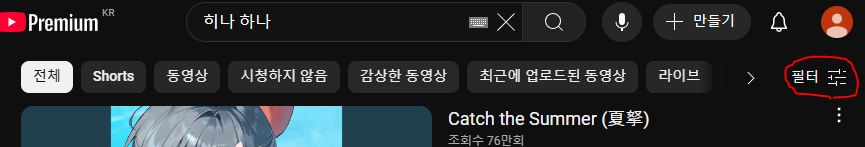
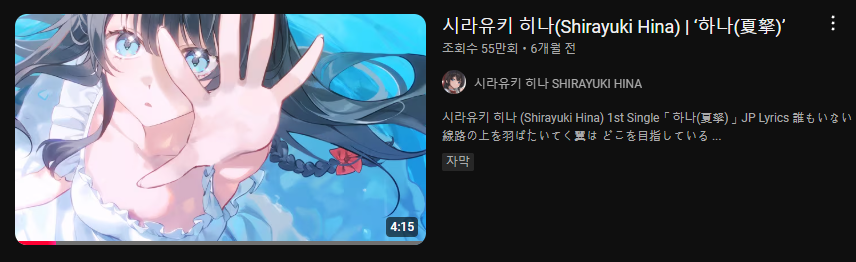
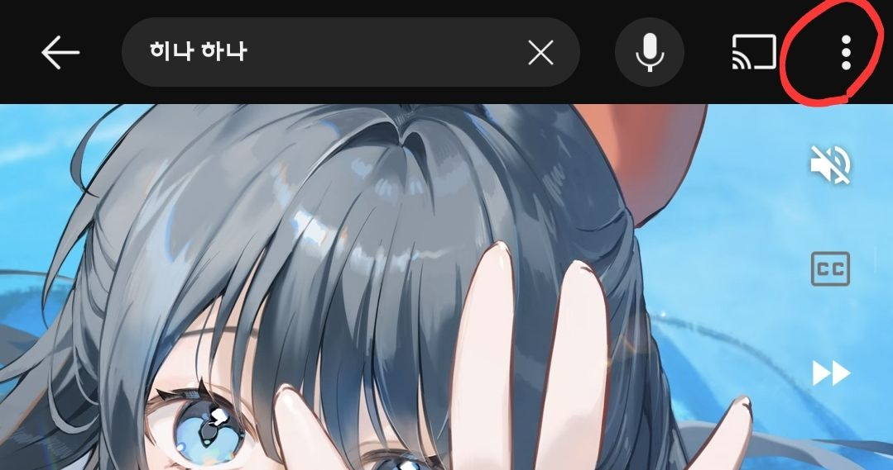
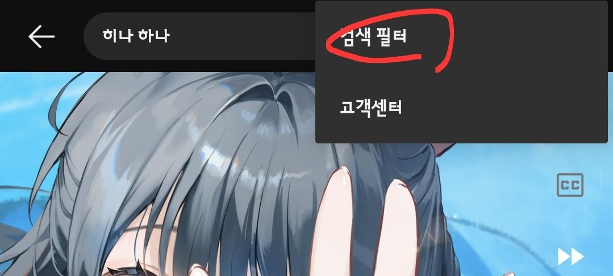
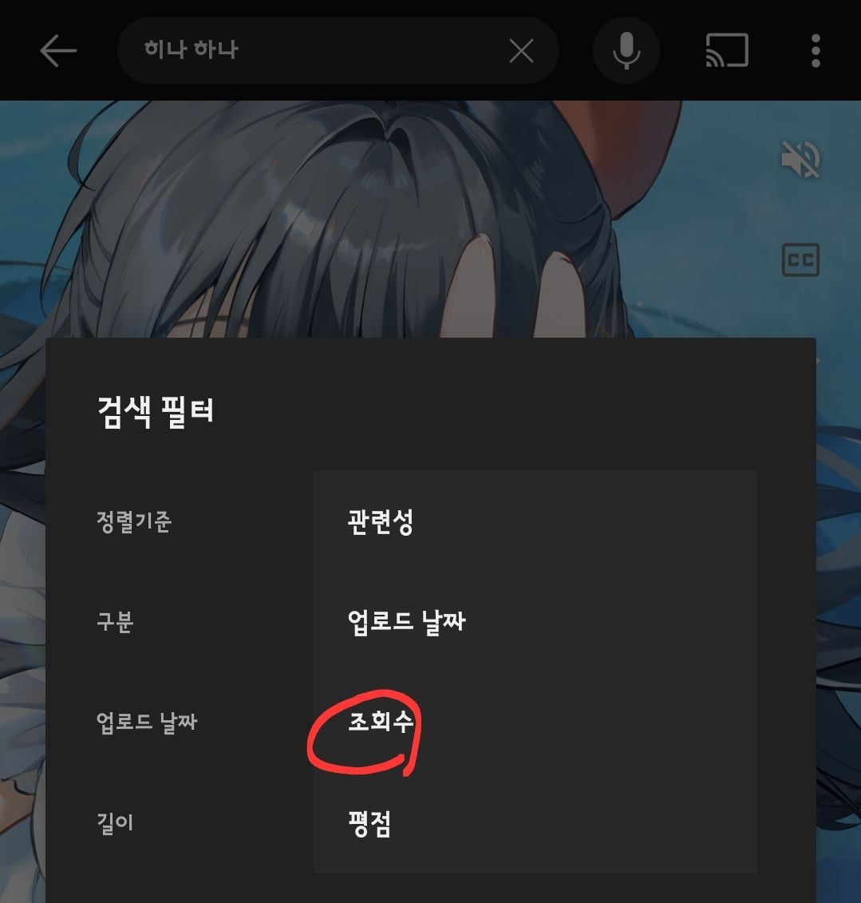
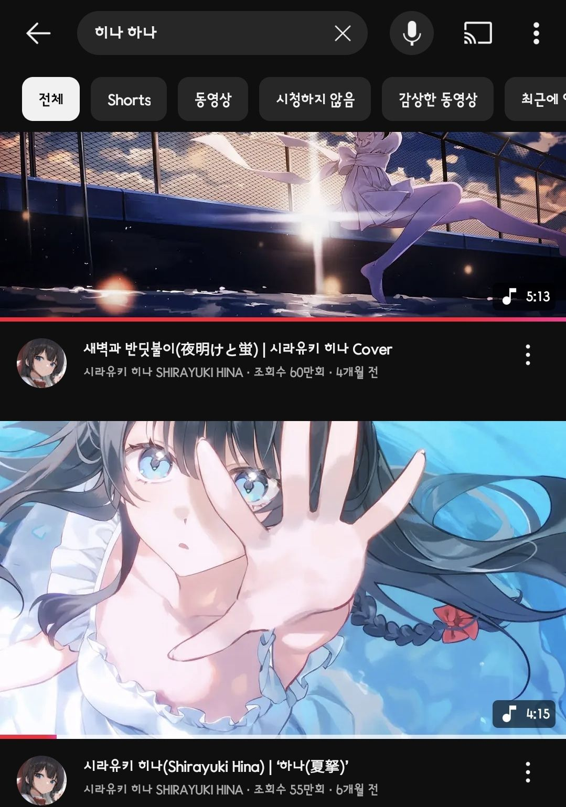

검색 안되는 노래
(시크릿 모드 기준 3개 이내)
오리지널 곡은 본 채널 뮤비로 봐주세요
기억날 때마다 한 번씩 검색, 조회수 순으로 정렬 후 들어주세요
댓글과 공유까지 한다면 효과가 더 좋다는 말도 있습니다
그리고 한 번 막힌 영상이 계속 막히는 현상이 반복되고 있습니다
한 번 막혔던 영상도 생각날 때 한 번만 부탁드립니다
7일 이내에 막혔던 곡들
정상화 방법
PC 기준

1. 필터 클릭

2. 정렬기준 - 조회수 순 클릭

3. 노래 듣기
모바일 기준

1. 점 세 개 클릭

2. 검색필터 클릭

3. 정렬기준 - 조회수 순 클릭

4. 노래 듣기
검색어 리스트